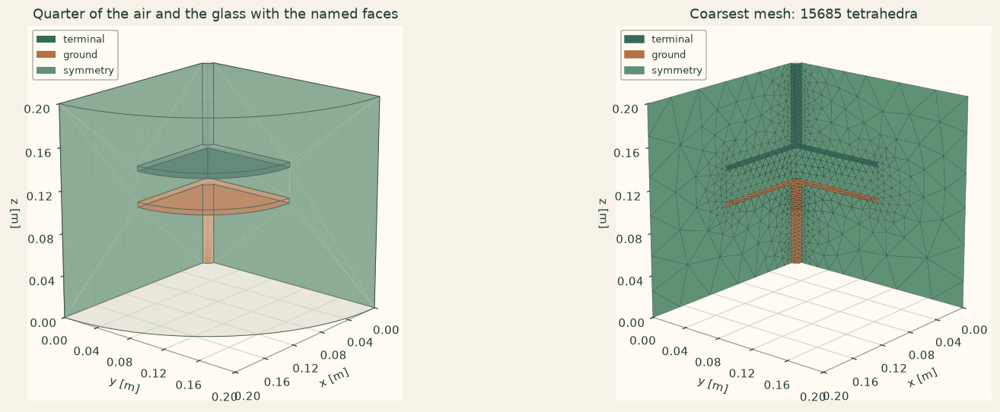

Docs › Examples › Capacitance of a disc capacitor with fringing fields
Electrostatics · 3D
Capacitance of a disc capacitor with fringing fields
Two metal discs with a glass dielectric and leads in an air domain: the capacitance including the fringing field at the rim.
Run locally with OneSimulation. The example downloads are free. Running them requires an activated runtime. Runtime Alpha 0.2.1a7 · CPython 3.13 on macOS (Apple Silicon), Ubuntu 22.04 (x86-64), and Windows x64. Installation and activation · View pilot plans. Scope of the reference checks.

What it computes
Electrodes, glass and air are read from STEP files with named faces; the glass is embedded in the mesh. OneSimulation solves the 3D electrostatic potential with quadratic Lagrange elements on graded tetrahedra in a quarter model and takes the capacitance from the electrode charge, on three meshes and in a larger air region. The script that builds the STEP files comes with the notebook.
What it checks
The device capacitance changes by 0.0035 % between the two finest meshes (43.367 pF), a twice as wide air region adds 0.32 %, the charges of both electrodes cancel to 1e-13, and the ideal plate formula misses 10 %.
Geometry
The notebook starts at the import of the CAD files disc_capacitor_fringing.step, disc_capacitor_fringing_glass.step, disc_capacitor_fringing_wide.step: STEP (AP242), readable by any CAD program, with the names of the faces that the boundary conditions use. Put them next to the notebook.

The geometry script
The script disc_capacitor_fringing_geometry.py builds the geometry with the CAD objects of OneSimulation and writes the files. Change a dimension there, run it, and run the notebook again.
"""Geometry of the OneSimulation example "Capacitance of a disc capacitor with fringing fields".
Builds one quarter of the capacitor with the CAD objects of OneSimulation: two metal discs (radius
10 cm, 5 mm thick) with round leads on the axis, 3 cm apart, in an air cylinder. The space between
the discs holds a quartz-glass disc. The modelled part is everything that carries a field, the air
together with the glass; the metal is cut out. It is written to disc_capacitor_fringing.step (air
cylinder of 20 cm radius) and disc_capacitor_fringing_wide.step (40 cm) with the face groups
terminal, ground, symmetry and outer. The glass disc, which marks the region of the dielectric, is
written to disc_capacitor_fringing_glass.step.
"""
from onesim.cad.d3 import Box, Cylinder
disc_radius, plate, gap, lead_radius, height = 0.10, 0.005, 0.03, 0.0075, 0.20
lower = 0.08
upper = lower + plate + gap
ground = Cylinder(radius=disc_radius, length=plate, origin=(0, 0, lower)) | Cylinder(
radius=lead_radius, length=lower
)
terminal = Cylinder(radius=disc_radius, length=plate, origin=(0, 0, upper)) | Cylinder(
radius=lead_radius, length=height - upper - plate, origin=(0, 0, upper + plate)
)
for radius, name in (
(0.20, "disc_capacitor_fringing.step"),
(0.40, "disc_capacitor_fringing_wide.step"),
):
quadrant = Box(length=radius, width=radius, height=height).named("cut")
field = (
(Cylinder(radius=radius, length=height) & quadrant)
- ground.named("ground")
- terminal.named("terminal")
)
faces = field.boundaries
field = field.grouped(
terminal=field.select(faces=lambda face: face.id.startswith("terminal.")),
ground=field.select(faces=lambda face: face.id.startswith("ground.")),
symmetry=faces["cut.x_min"] | faces["cut.y_min"],
outer=faces.bottom | faces.top | faces.outer_wall,
)
field.save(name)
glass = Cylinder(radius=disc_radius, length=gap, origin=(0, 0, lower + plate)) & Box(
length=disc_radius, width=disc_radius, height=height
)
glass.save("disc_capacitor_fringing_glass.step")The notebook
The complete notebook, cell by cell. Run it to produce the figures and the comparison printout.
A capacitor in its simplest form: two metal discs of radius \(a=10\) cm and thickness \(5\) mm, separated by a \(d=3\) cm thick disc of quartz glass (\(\varepsilon_r=4.2\)) of the same radius. Each disc carries a lead (radius \(7.5\) mm) that runs along the axis to the boundary of a cylindrical air region of radius and height \(20\) cm. The upper electrode is held at \(V_0=1\) V, the lower one is grounded, and the outer boundary of the air carries no charge (\(\mathbf D\cdot\mathbf n=0\)).
The field is not confined to the dielectric: it bulges out at the rim of the discs into the surrounding air (fringing), and the field at the sharp metal edges is singular. Both raise the capacitance above the ideal parallel-plate value \(\varepsilon_0\varepsilon_r A/d\).
One quarter of everything that carries a field, the air together with the glass, comes from the CAD file disc_capacitor_fringing.step; the metal is cut out, its surface is a boundary. The glass disc, which the mesh follows and which marks the dielectric, comes from disc_capacitor_fringing_glass.step, and disc_capacitor_fringing_wide.step holds the same capacitor in an air cylinder of twice the radius. The script disc_capacitor_fringing_geometry.py builds all three with the CAD objects of OneSimulation.
| faces | condition | |---|---| | terminal: upper disc and its lead | \(V=V_0\) | | ground: lower disc and its lead | \(V=0\) | | symmetry: the cut planes \(x=0\) and \(y=0\) | \(\mathbf D\cdot\mathbf n=0\) | | outer: wall, bottom and top of the air cylinder | \(\mathbf D\cdot\mathbf n=0\) |
OneSimulation solves \(-\nabla\cdot(\varepsilon\nabla V)=0\) with second-order Lagrange elements. The charge of an electrode is the reaction of the potential on its faces, \(C=Q/V_0\).
Reference. There is no closed form for the complete device. It is checked by a mesh study with a Richardson estimate, by the charges of the two electrodes, which must be equal and opposite, and by a larger air region. The example Fringing fields and the capacitance of a disc capacitor compares the same discs without glass and leads with a boundary-integral reference.
import numpy as np
from onesim.cad.d2 import Plane
from onesim.cad.exchange import load
from onesim.materials import VacuumPermittivity
from onesim.meshing import LocalRefinement, TetrahedralMesher
from onesim.numerics import Numerics
from onesim.numerics.fem import FiniteElement, Lagrange
from onesim.numerics.linear import SparseDirect
from onesim.physics.electrostatics import (
FixedPotential,
PoissonEquation,
ZeroNormalElectricDisplacement,
)
from onesim.results.comparisons import convergence
from onesim.simulation import Problem, Simulation, regionwise
from onesim.visualization import plots, theme
theme.set()Geometry and mesh
The mesh follows the surface of the glass (embedded_regions), so every tetrahedron lies in one material. Three meshes differ in the cell size in the air, in the glass and along the four rim edges of the discs; the wide air cylinder is meshed with the coarsest sizes.
regions = {
"air cylinder 20 cm": load("disc_capacitor_fringing.step"),
"air cylinder 40 cm": load("disc_capacitor_fringing_wide.step"),
}
glass = load("disc_capacitor_fringing_glass.step")
device = regions["air cylinder 20 cm"]
disc_radius, _, gap = glass.size
sizes = ((0.040, 0.0080, 0.0040), (0.0283, 0.00566, 0.00283), (0.020, 0.0040, 0.0020))
cases = [("air cylinder 20 cm", level) for level in sizes] + [
("air cylinder 40 cm", sizes[0])
]
meshes = [
TetrahedralMesher(
target_size=in_air,
embedded_regions=(glass,),
refinements=(
LocalRefinement(region=glass, target_size=in_glass),
LocalRefinement(
region=regions[name].select(
edges=lambda edge: edge.kind != "line"
and abs(np.hypot(*edge.midpoint[:2]) - disc_radius) < 1e-6
),
target_size=at_rim,
),
),
).generate(regions[name])
for name, (in_air, in_glass, at_rim) in cases
]
view = plots.Camera(elevation=18, azimuth=40)
fig = plots.figure(1, 2, size=(14, 7))
plots.geometry(
device,
selection={
name: device.boundaries[name] for name in ("terminal", "ground", "symmetry")
},
labels=False,
camera=view,
title="Quarter of the air and the glass with the named faces",
ax=fig[0],
)
plots.mesh(
meshes[0],
groups=("terminal", "ground", "symmetry"),
camera=view,
title=f"Coarsest mesh: {meshes[0].cell_count} tetrahedra",
ax=fig[1],
)
plots.show()Model
regionwise gives the points inside the glass disc its permittivity and the air the vacuum value. Each mesh is solved once; the reactions on terminal and ground are the charges of a quarter of each electrode.
voltage, relative_permittivity = 1.0, 4.2
vacuum = float(VacuumPermittivity().evaluate())
bottom, top = glass.bounding_box[0][2], glass.bounding_box[1][2]
in_glass = (
lambda points: (np.hypot(points[:, 0], points[:, 1]) < disc_radius)
& (points[:, 2] > bottom)
& (points[:, 2] < top)
)
numerics = Numerics(
spatial=FiniteElement(element=Lagrange(order=2)), linear_solver=SparseDirect()
)
potentials, fields, charges = [], [], []
for (name, level), mesh in zip(cases, meshes):
faces = regions[name].boundaries
model = PoissonEquation(
domain=regions[name].volume,
permittivity=regionwise(
((in_glass, relative_permittivity * vacuum),), default=vacuum, unit="F/m"
),
)
problem = Problem(
name="Disc capacitor",
geometry=regions[name],
physics=(model,),
boundary_conditions=(
FixedPotential(boundary=faces.terminal, physics=model, value=voltage),
FixedPotential(boundary=faces.ground, physics=model, value=0.0),
ZeroNormalElectricDisplacement(
boundary=faces.symmetry | faces.outer, physics=model
),
),
)
result = Simulation(
problem=problem, mesh=mesh, numerics=numerics
).solve_stationary()
potentials.append(result.field(model.potential))
fields.append(result.field(model.electric_field))
charges.append(
(
4 * potentials[-1].reaction(faces.terminal),
4 * potentials[-1].reaction(faces.ground),
)
)Results
The capacitance on the three meshes, the charge balance of the two electrodes, the effect of the larger air cylinder and the share of the fringing field.
capacitance = np.array([terminal / voltage for terminal, ground in charges])
ideal = vacuum * relative_permittivity * np.pi * disc_radius**2 / gap
study = convergence(capacitance[:3], [level[2] for level in sizes])
print(
"air region rim size [mm] tetrahedra C [pF] (Q_terminal + Q_ground) / Q_terminal"
)
for (name, level), mesh, value, (terminal, ground) in zip(
cases, meshes, capacitance, charges
):
print(
f"{name:20s} {1e3 * level[2]:13.2f} {mesh.cell_count:12d} {1e12 * value:9.4f} {(terminal + ground) / terminal:+12.1e}"
)
print(
f"change between the two finest meshes {100 * abs(capacitance[2] / capacitance[1] - 1):.4f} %, "
f"extrapolated {1e12 * study.extrapolated:.4f} pF (observed order {study.order:.2f})"
)
print(
f"air cylinder of 40 cm instead of 20 cm radius (coarsest sizes): {100 * (capacitance[3] / capacitance[0] - 1):+.3f} %"
)
print(
f"ideal plates eps0 eps_r A/d = {1e12 * ideal:.3f} pF: {100 * (1 - ideal / capacitance[2]):.1f} % below the device; "
f"fringing and leads add {1e12 * (capacitance[2] - ideal):.3f} pF"
)Figure
The potential in the section through the axis (the quarter mirrored), the field strength at the rim of the discs on a logarithmic scale, and the mesh study in the air cylinder of 20 cm.
cut = Plane(origin=(0.0, 1e-6, 0.0), normal=(0.0, 1.0, 0.0))
decades = lambda E, position: np.log10(np.maximum(np.linalg.norm(E, axis=1), 1e-3))
fig = plots.figure(1, 3, size=(18, 6))
plots.section(
potentials[2],
plane=cut,
symmetry={"planes": [((1, 0, 0), (0, 0, 0))]},
limits=(0, voltage),
contours=19,
subdivisions=3,
label="potential [V]",
title="Potential, section through the axis",
ax=fig[0],
)
plots.section(
fields[2],
plane=cut,
component=decades,
limits=(0.6, 2.2),
contours=16,
subdivisions=3,
label="log10(|E| / (V/m))",
title="Fringing field at the rim of the discs",
xlimits=(0.07, 0.13),
ylimits=(0.065, 0.135),
ax=fig[1],
)
plots.line(
[mesh.cell_count for mesh in meshes[:3]],
{"air cylinder 20 cm": 1e12 * capacitance[:3]},
hlines={"extrapolated": 1e12 * study.extrapolated},
markers=True,
scale="logx",
xlabel="tetrahedra in the quarter",
ylabel="capacitance [pF]",
title="Mesh study",
legend="upper right",
ax=fig[2],
)
plots.show()Going further
Change the gap or the glass in disc_capacitor_fringing_geometry.py and write the STEP files again; remove the leads to see their share of the fringing; or drive each electrode in turn against a grounded outer boundary to obtain the capacitance matrix.